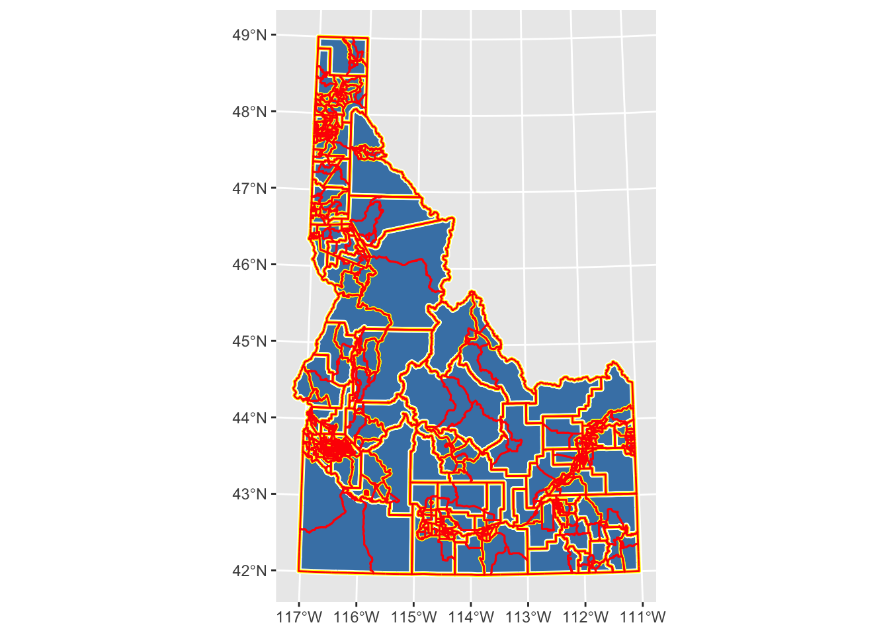

In order to facilitate you thinking about your assignment, I’m providing how I would approach each of the tasks listed in the assignment. This should allow you to go in and identify places where a) your code runs but produces a different outcome, b) your code is different but produces the same outcome, and c) your code doesn’t run because you were missing something. There is something to learn from each of these outcomes. When you revise your code, I don’t want you to just copy what I’ve done, think about your underlying logic and compare it to what I’ve written. You don’t have to agree with me (or even use the syntax I used), you just have to understand what you did!! If there are places where you are feeling fuzzy or want more explanation, note them on your revised assignment and I’ll try to address it in class or in my response to your assignment.
Task 1: Getting Your Geometries Sorted
Read your data into R (loading the appropriate data, packages, and functions) and check the geometries.
library(tidyverse)
── Attaching core tidyverse packages ──────────────────────── tidyverse 2.0.0 ──
✔ dplyr 1.1.4 ✔ readr 2.1.5
✔ forcats 1.0.1 ✔ stringr 1.5.2
✔ ggplot2 4.0.0 ✔ tibble 3.3.0
✔ lubridate 1.9.4 ✔ tidyr 1.3.1
✔ purrr 1.1.0
── Conflicts ────────────────────────────────────────── tidyverse_conflicts() ──
✖ dplyr::filter() masks stats::filter()
✖ dplyr::lag() masks stats::lag()
ℹ Use the conflicted package (<http://conflicted.r-lib.org/>) to force all conflicts to become errors
library(sf)
Linking to GEOS 3.13.0, GDAL 3.8.5, PROJ 9.5.1; sf_use_s2() is TRUE
library(terra)
terra 1.8.70
Attaching package: 'terra'
The following object is masked from 'package:tidyr':
extract
library(googledrive)library(patchwork)
Attaching package: 'patchwork'
The following object is masked from 'package:terra':
area
! Using an auto-discovered, cached token.
To suppress this message, modify your code or options to clearly consent to
the use of a cached token.
See gargle's "Non-interactive auth" vignette for more details:
<https://gargle.r-lib.org/articles/non-interactive-auth.html>
ℹ The googledrive package is using a cached token for
'mattwilliamson@boisestate.edu'.
Auto-refreshing stale OAuth token.
Rows: 1284 Columns: 10
── Column specification ────────────────────────────────────────────────────────
Delimiter: ","
chr (1): NAME
dbl (9): GEOID, totalpop, white, black, asian, hispanic, hhincome, ls, p
ℹ Use `spec()` to retrieve the full column specification for this data.
ℹ Specify the column types or set `show_col_types = FALSE` to quiet this message.
This should look familiar to you. I start by loading packages, sourcing functions, and adding any custom functions. In this case, I’ve used our read_project_valid function from lesson 12 because I know I’ve got a lot of sf objects to align and deal with.
After downloading the data, I use list.files to create a vector of the appropriate shapefiles (pattern=".shp") and then use map to apply read_project_valid to that vector. I then supply names to each element in the list returned by map so that I can track the validity of each object. I create the validity_summary object by using map_dfr to return a dataframe that tracks the number of valid and invalid geometries in each file. Taking a look at that data frame indicates that all of the objects have valid geometries so we should be good to move on there. I prefer not to have all of my sf objects in a list so I bring each one into my Global Environment by using the walk2 function to assign each list element to an object in my Global Environment. You don’t have to do this, but I prefer it for the later steps in the workflow.
The last thing I do is read in the demographic csv (idahoDemog.csv) using read_csv and take a glimpse of the resulting data.
As you might have noticed, read_csv is trying to convert the GEOID column into a numeric data type. This is not ideal as GEOID is the unique identifier that links Census geographies across the various Census spatial hierarchies. As such, I want to force read_csv to read that column as a character. We can do this by providing parameters to the col_types argument. If you look at the helpfile, you’ll see that col_types expects a list or vector of all the columns and their types. This is tedious, so we use the cols function to provide the specific columns we are interested in and then add the .default argument to have read_csv guess any columns we don’t specify. If you glimpse the result, you’ll see we’ve fixed the problem.
Use the tigris package to download the shapefiles for Idaho’s boundaries (state, county, tract, and block groups).
ggplot() +geom_sf(data = id_state, fill ="steelblue") +geom_sf(data = id_counties, fill ="transparent", color ="white", lwd =1.5) +geom_sf(data = id_tracts, fill ="transparent", color ="yellow", lwd =1) +geom_sf(data = id_blockgroup, fill ="transparent", color ="red", lwd =0.5)

The tigris package provides shapefiles for a variety of the TIGER (Topologically Integrated Geographic Encoding and Referencing) dataset which serves as the spatial backbone for the US Census (and many other applications). tigris initiates a series of pre-determined calls to the US Census API and returns the data in sf format. If you check the helpfiles, you’ll see that there are options for which year you download and the scale of cartographic accuracy along with instructions for downloading specific geographies.
I download each of the necessary geographies and project them. I then use ggplot to visualize all of the data. The key things to notice in this plot are that each call to geom_sf layers on top of the previous one and that I’m not using an aes argument to assign colors to variables. Instead, I just want different colors for each dataset along with different line-widths (lwd) to help you see each dataset plotted on top of the previous one.
Use a spatial join to combine connect your cdc data to the tract shapefile and a tabular join to connect your demographic data to the blockgroups
The joins are pretty typical usage of st_join (the spatial join) and left_join (the tabular join). Once the joins are complete, I want to visualize both datasets. I again use geom_sf, but this time I supply a fill argument to the mapping function. This tells ggplot that I want the values for the fill variable to detemine the colormapping that is displayed. Now that I’ve assigned a fill variable, I can provide ggplot with additional info to determine how I want that fill to be scaled. I use scale_fill_viridis because it’s a nice, colorblind-friendly palette that works well for continuous values. By providing a name argument to the scale_fill_viridis call, I am telling ggplot what I want to see printed as the legend label. Lastly, I use theme_bw(), one of ggplot’s built-in theming systems to deal with most of the plot details. The last piece here, and the piece that might be new, is the use of the patchwork package to plot the two maps side-by-side. Patchwork provides a simple interface for making multi-panel plots using mathematical operators (in this case, I’m using + to add the two plots together). The package webpage and helpfile have lots of useful intro for combining plots in a relatively simple way.
Use this webpage to find an appropriate projected CRS for Idaho and make sure all of your data are in that projection. I stuck with the same CRS we used before because we’re focused on distance for most of this assignment.
Reflection: Why do we want the data to have a common CRS? What characteristics did you look for when you were choosing your CRS? How might your choice affect the interpretation of the map?
Bonus: Make 3 maps depicting hospital location, a variable of your choosing, and the Idaho boundary using different projections.
You didn’t have to do this, but I wanted to show you a simple way for changing the CRS without modifying the data. Rather than creating a bunch of objects that I wouldn’t use, I simply used the coord_sf call in ggplot to transform the data to different projections. I wanted to use a few different types so you can see the difference between projection that preserve distance, area, and angle. After creating each of these plots by modifying the coord_sf call, I use patchwork to combine them all. The two patchwork additions are the use of plot_layout to collect the various legends (because they’re all the same so there’s no reason to print them everytime) and the use of the & theme() call. The & in patchwork behaves like the + in ggplot but allows you to assign theme elements across all of the plots in the patchwork.
Task 2: Creating New Data With Spatial Operations
For this section, you’ll need to use spatial measures and predicates to calculate new variables.
Calculate the average distance between each block group and the nearest hospital. Use ggplot to explore the correlation between census demographics and distance to hospitals.
I used the distance function in the terra package because we wanted the average distance in each of the polygon geometries. You might have tried st_distance, but st_distance wouldn’t give us this directly and we wouldn’t be able to deal with the fact that some counties are large enough to have portions that are close to a hospital and portions that are fast. It’s not quite as precise as st_distance, but the difference is negligible here (because we have 1km cells).
Once we’ve calculated the distance raster, we can extract the average values to our block-group geometries. We do this by using terra::extract, converting our sf object to a SpatVector (using vect), providing the mean to the fun argument (along with na.rm=TRUE). Finally, I set the bind argument to TRUE so that the values are attached to the original spatial data.
Once the extract is done, I pipe the result to st_as_sf to convert the SpatVector back to an sf object and then use dplyr::rename to give the extracted variable a more useful name. Once I have that set, I can create my plotting dataframe by pivoting to long format so that I can facet each of my plots by the variables I want to examine the relationship with.
Do the same thing but comparing tract-level distances and 3 health indicators from the CDC data.
This is largely the same as the previous question except I do some more fancy things setting up my plotting dataframe. This CDC dataset has so many variables along with columns including the confidence intervals (which show up as character columns) that I wanted to simplify things a bit. The select(where(is.numeric)) piece tells R to keep only the columns where is.numeric returns TRUE. Then I provide a subset of the variables that I want to plot (health_vars). Then I can use select(any_of to choose columns in that vector. The strange paste(health_vars, collapse = "|") part creates a single text string with “|” breaking up the variable names (because “|” is the operator for “OR”). Then the plot of long-form data is the same as before.
Write a function that is generic enough to take 2 vector datasets and calculate an average distance for each polygon in the first dataset.
1. Identify source and desitnation datasets2. Build template raster at desired resolution and extent3. extract values and calc average4. return dataframe
Just noting some pseudocode that might help you articulate the function
Based on the previous tasks, you should be able to guess what this looks like. The only thing I’ve changed here is to a) provide more generic object names so that this is a bit more interchangeable and b) to provide an argument that allows you specify the desired resolution of the template raster. You should note, however, that this is a pretty rough function. One could build out a lot of different checks and subroutines that would allow you to specify something other than an sf object or to generate more informative error messages. That seemed overkill to me here, but I’ll keep building those things out in the future so that you can see them.
Aggregate the demographic and health data to the county level. Then, create a new variable that contains the count of the number of hospitals in each county. Plot the correlation between your variables and the count of hospitals.
Because both datasets have unique identifiers for county we can use the group_by, summarise routine to calculate the means. We then add a mutate to count the number of hospitals which we get by combining st_intersects (a predicate the returns T/F for each element) with lengths to count the number of TRUE in each call to st_intersects. We plot as before, but use scale_x_reverse (one of many ggplot calls to order, sort, and format the axes) to make these plots reflect something similar to the distance plots above (ie., lower distances to the left should correspond to more hospitals also on the left)
Reflection: How might the different spatial resolutions of your data affect the correlations you plotted? If there were differences in the correlations you plotted, what do you think is driving those differences?